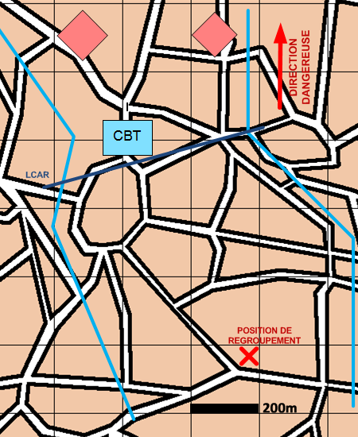

NIVEAU : Automate
ARME : Melee
MISSION : Jalonner
NIVEAU : Automate
ARME : Melee
MISSION : Jalonner
Schéma de modélisationJalonner |
Paramètres obligatoiresFuseauZone de responsabilité. Direction Dangereuse Orientation privilégiée des capteurs. Point de regroupement Point de regroupement à la fin de la mission |
|
Paramètres optionnelsLigne(s) de coordination [LC]Ligne de début et fin de mission [LDM/LFM] |
||
 |
Fiches missions |  |